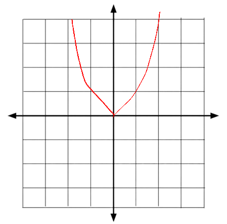
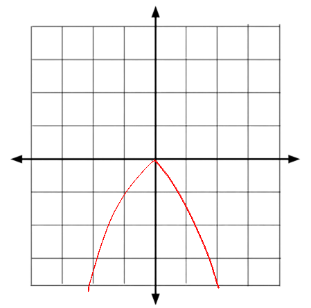

Quadratic Functions
Introduction
A Quadratic function is a quadratic equation that is represented by a U-shaped line on a coordinate graph like this one…

The shape of a quadratic function is called a parabola which is a U-shaped figure that gets thinner and thinner relative to the x value.
Like a quadratic, these follow the same standard form and a is a nonzero number…
f(x) = ax2 + bx + c
a ≠ 0
A quadratic function may either open above or below depending on if it has a positive or negative value…
This is when a is a positive value

This is when a is a negative value
Graphing a Quadratic Function
Now graphing a quadratic function takes a lot of steps but isn’t impossible to do. A quadratic function has many elements, examples would be y-intercepts, x-intercepts, the vertex and more.
Y-intercept
To calculate the y-intercept in a quadratic function, you would substitute x as 0. So for example, f(x) = 2x2 + 3x + 3, substitute x as 0…
2(0)2 + 3(0) + 3
0 + 0 + 3 = 3
In this example, the Y-intercept is 3.
A more straightforward formula for finding the Y-intercept in a quadratic function is…
(0, c)
X-intercept(s)
The X-intercept(s) in a quadratic function are the point/points that cross the x-axis. To calculate the x-intercepts, substitute f(x), y or whatever the quadratic is equal to as 0…
f(x) = 2x2 + 3x + 3
y = 2x2 + 3x + 3
2x2 + 3x + 3 = 0
And solve the quadratic equation using the quadratic formula…
Looks like the roots of this quadratic are imaginary, this means that the quadratic function doesn’t have x-intercepts at all because no points cross the x-axis. If the roots are not imaginary numbers, then the parabola has points that cross the x-axis somewhere on the graph.
Vertex
The vertex is the highest point (if a is a negative) or the lowest point (if a is a positive). There are two values that are needed to be solved in order to find the x and y values of the vertex. First is the x-coordinate of the vertex which is…
x = -b/2a
X is -b over 2a. An example would be…
2x2 + 3x + 3
Substitute the values into the formula…
-3/4
The x-coordinate of the vertex is -3/4. Finding the y-coordinate of the vertex involves substituting x with the answer from -b/2a which is -3/4…
f(-3/4) = 2x2 + 3x + 3
= 1.125 - 2.25
= –1.125 + 3
= 1.875
The vertex is at (-3/4, 15/8).
Done? Here are other Links
Back to Main Page
Back to Informational
If you are seeing this, your clock is missing a ding-dong
If you are seeing this, your calender needs a pin or two.